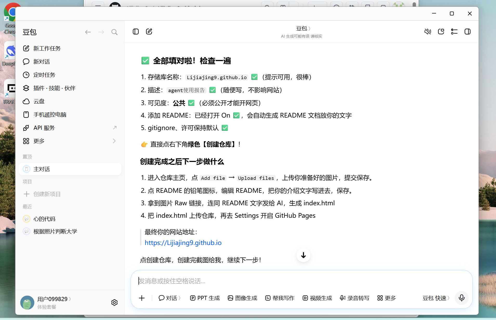
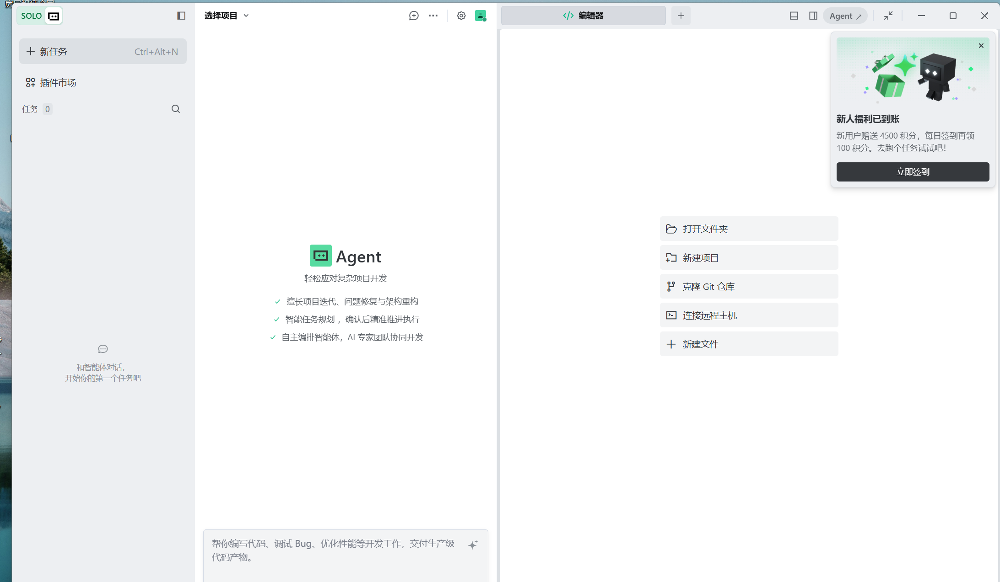
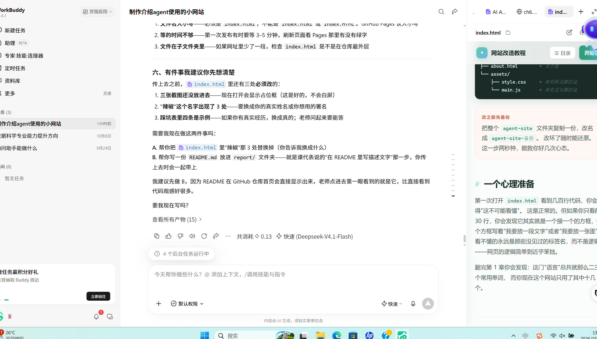

WorkBuddy
项目搭建 · 主力
我主要用它来学习静态网站搭建。从最基础的“网站是由什么组成的”开始问起， 到理解 GitHub Pages 的运行原理，再到把仓库创建、文件上传、开启发布这一整套流程走通， 都是靠它一步步带着我做的。
它和其他工具最大的不同是：它不只会回答问题，还能直接帮我创建文件、修改代码、验证效果。 我做这个汇报页面的时候，就是它帮我把文字和截图排成网页的。
- 网站搭建
- GitHub 原理理解
- 文件与代码修改
记录我在课程学习中实际使用过的几款 AI Agent 工具，以及它们各自帮我解决了什么问题。
先说结论，再逐个展开
本次项目中，我向 WorkBuddy 请教网站搭建方法，同时上网检索各类 Agent 工具的下载与使用方式， 循序渐进地接触、学习这些陌生技术领域。我深刻体会到，Agent 工具能为日常学习提供有力支持， 在编程练习、习题解析、项目搭建等场景发挥重要作用。
按使用频率从高到低排列，每个工具附上我的实际用法
我主要用它来学习静态网站搭建。从最基础的“网站是由什么组成的”开始问起， 到理解 GitHub Pages 的运行原理，再到把仓库创建、文件上传、开启发布这一整套流程走通， 都是靠它一步步带着我做的。
它和其他工具最大的不同是：它不只会回答问题，还能直接帮我创建文件、修改代码、验证效果。 我做这个汇报页面的时候，就是它帮我把文字和截图排成网页的。
这是我日常用得最多的工具。遇到陌生知识点，我会先把截图丢给它做图片分析， 让它告诉我这是什么、在哪里操作、下一步该点哪个按钮——很多界面上的术语， 光看文字说明根本看不懂，看截图就明白了。
除此之外，它也是我排查代码报错的主要帮手。Python 编程作业报错的时候， 我把错误信息贴过去，它会解释这个错误在说什么、为什么会发生、应该怎么改。 高数习题卡住的时候，我也会让它把解题步骤一步步拆开讲，而不是直接给答案。
Trae 是一个 AI 编程工具，我主要用它来做代码相关的任务。它的特点是能直接打开我的项目文件夹， 在里面读写文件、执行代码，所以比起纯聊天式的工具，它更适合处理“需要真正跑起来”的事情。
我用它做过 Python 代码的调试——把程序交给它运行，看它报什么错、卡在哪一步， 然后让它针对性修改。它的 Agent 模式可以自己规划步骤、连续执行多个操作， 这一点是我第一次接触时觉得最新鲜的地方。
我在查资料的过程中了解到这个工具，它的网页版可以免费使用，不需要付费也不用绑卡。 它的“深度思考”模式会把推理过程完整展示出来，遇到需要一步步推导的题目时， 看它的思考过程对我理解思路很有帮助。
我在数据科学与大数据技术专业学习，经常需要处理逻辑和计算类的问题， 这类任务它表现不错。目前我主要把它作为豆包之外的一个备选， 不同工具给出不同思路，对比着看反而更容易想明白。
我在实际使用这些工具时留下的记录



第一，这些工具没有一个能替我“把作业做完”。 它们能在我完全不懂的情况下帮我迈出第一步，但仓库叫什么名字、截图放哪一张、 哪句话能代表我的真实想法，这些还是得我自己决定。
第二，会提问比会用工具更重要。 同一句话问得含糊，它就给你一堆泛泛的说法；把具体报错、具体界面截图、 具体想达成什么效果说清楚，它给出的东西才有用。这个差别我试了很多次才体会到。
第三，不同工具适合不同的事。 需要看懂界面、解释概念，我用豆包；需要真的改文件、跑程序，我用 Trae 和 WorkBuddy； 需要一步步推导的题，我用 DeepSeek 的深度思考。没有哪个是“最好”的， 关键是知道什么情况该找谁。
对我来说，这次最大的收获不是做出了一个网页，而是知道了一件事： 遇到完全陌生的领域时，我不再只能干等着别人教我，而是可以自己先动手试一试。